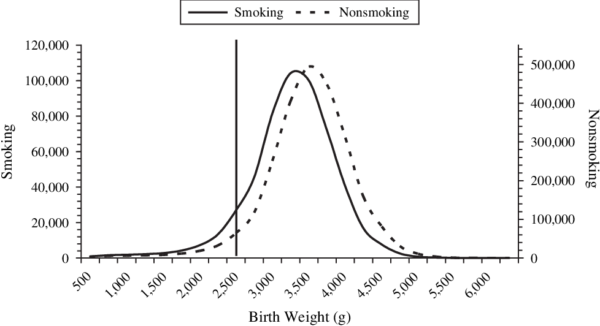
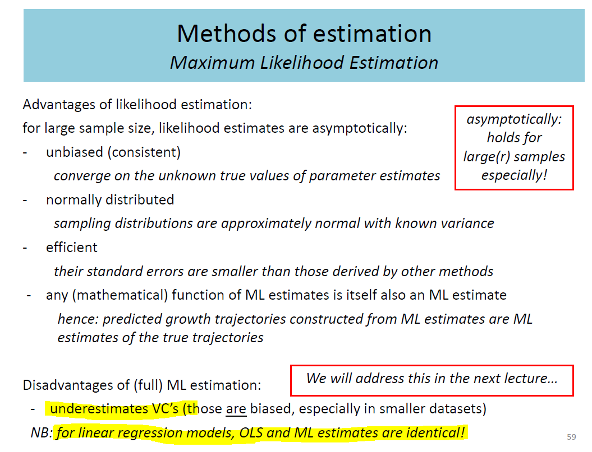
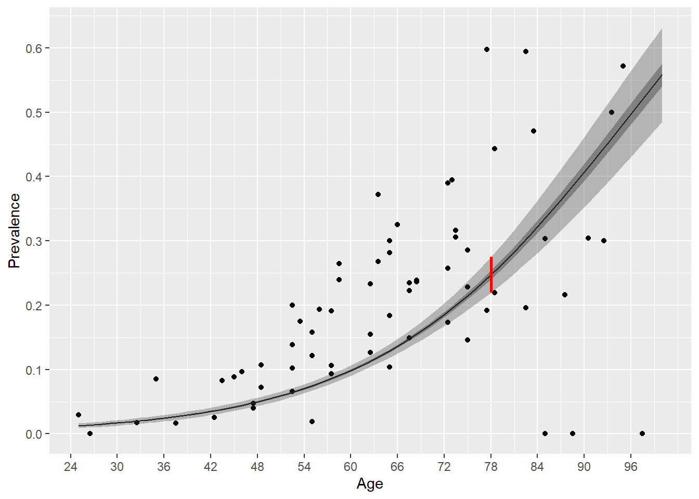

For testing, use \(\alpha=0.05\) unless otherwise specified. Datsets can be found under our shared drive. Please try to do all three exercises (but if it is too hard, it is ok to choose only two ✌️).
 Low birth weight (LBW) infants have lower infant mortality in groups in which LBW is most frequent. For example, in 1991, US infants born to smokers had higher risks of both LBW and infant mortality than infants born to nonsmokers. However, among LBW infants, infant mortality was lower for infants born to smokers (relative rate = 0.79). There are competing theories regarding this so-called “paradox.”. See Hernández-Díaz et al, (2006).
This exercise examines the differences between using the linear regression model versus the generalized linear regression model where the distribution of the response variable is considered normal. You will find the data in the file practical2_lowbwt.sav. The codebook for this data can be found below
| column name | description |
|---|---|
| ID | Low Birth Weight Baby (1=Yes under 2500g, 0=No) |
| LOW | Mother’s age in years |
| AGE | Weight at Last Period |
| LWT | Race (1=White, 2=Black, 3=Other) |
| SMOKE | Smoke during Pregnancy (1=Yes, 0=No) |
| PTL | History of Premature Labour (# of times) |
| HT | History of Hypertension (1=Yes, 0=No) |
| UI | Presence of Uterine Irritability (1=Yes, 0=No) |
| FTV | Visits to Doctor During 1st trimester |
| BWT | Baby’s birth Weight in Grams |
BWT (birth weight) on the explanatory variables SMOKE and LWT (weight of the mother during last menstrual period), and interpret the coefficient associated with the variable LWT.
When comparing between the two methods, notice we expect the estimates to be exactly the same but the variance components (standard errors, confidence intervals etc…) should be different!
GzLM (SPSS users) or glm(...) (R users) in which you define the distribution of the response variable as normal (let the software create confidence intervals for the regression coefficients). Do the results agree? Where do they differ and why? In your answer, please comment on the similarities and difference in the diagnostics when comparing the two models.For R Users!
use m <- lm(...) to evaluate the the model and confint(m) for the confidence intervals. If you have two models, m1 and m2, you may compare them by using modelsummary(list(m1, m2), stars=TRUE). You will need to install and load the package modelsummary.
What are the degrees of freedom associated with the two deviance indicators? Explain why these indicators have those values.
BONUS QUESTION: Calculate the deviance for the following: the null model, the residual deviance for the model in part a and for the model in part b.
For R Users!
to answer these questions, you to use the residuals of the models, which you can calculate by typing residuals(m), where m is your model, the output of the lm or glm function.
Remember:
lm(y~1).For SPSS Users
Analyze > Descriptive statistics > Crosstabs
For R Users
If you use xtabs in R and the formula ~ SMOKE + LOW, you can run a chi-square test by typing summary(xtabs(...)). Try to run this and interpret the results!
Alternatively, you could use the functions from the janitor library, namely tabyl, adorn_percentages, adorn_pct_formatting and adorn_title.
This exercise further explores the Dupuytren data we already encountered in the lectures. It builds and compares various models. You will need to use the file practical2_dupuytren.sav.
For R Users
To estimate the scale, calculate the sum of squares of Pearson’s residuals, which you can find as follows: residuals(mdl, type="pearson").
You then print out the model using the summary and the dispersion argument as follows: summary(mdl, dispersion=scale). Alternatively, you can calculate the model with over-dispersion directly using glm with family=quasibinomial.
To calculate the predicted values, use the predict function and add the new data you want to predict in the function call. Make sure you use the correct type for the prediction (response) and pass the dispersion you are interested in. When evaluating the 95% confidence interval, use the formula \(\hat{Y}\pm1.96*SE\).
Your code may look as follows:
predict.glm(qmdl, data.frame(Age=78), type="response", se.fit=TRUE)

For SPSS Users
Add a fictitious case with Age = 78 and Total = 100 to the dataset. Run the analysis again and let SPSS save the predicted value of the mean response and its lower and upper bounds.
In 1973 UC Berkeley was nearly sued for sex-discrimination, all due to an interesting statistical phenomenon called Simpson’s paradox. In this exercise, we are going to investigate the dataset of admissions to UC Berkeley in 1973, which you can find in practical2_UCBadmit.sav. The data contains the number of applicants applying and the number accepted to UC Berkeley in 1973. You will then judge whether the data supports the claim, that it may be guilty of sex discrimination.
Compare the acceptance rate among male and female applicants to UC Berkeley in 1973. What do you conclude?
Create a table, comparing the acceptance rates among male and female applicants in each department separately. What do you conclude? Are the numbers consistent with those in your answer to the previous question? Explain.
For SPSS Users
You can use the following commands: Analyze > Descriptive statistics > Crosstabs
Perform a binomial regression of the applications and admittance on the explanatory variable applicant.gender by building a Generalized linear model, and using the logit link function. What is the interpretation of the coefficient of applicant.gender? Show that the goodness of fit measures suggest that the model may be inadequate.
The previous model did not correct for over-dispersion. Compare it to a model that does correct for over-dispersion, estimating the scale in two ways: using Pearson’s chi-square and using the deviance.
To the model above, add the fixed effects of the departments by creating the appropriate dummy variables. What does this model suggest about the possibility of sex discrimination in acception rates?